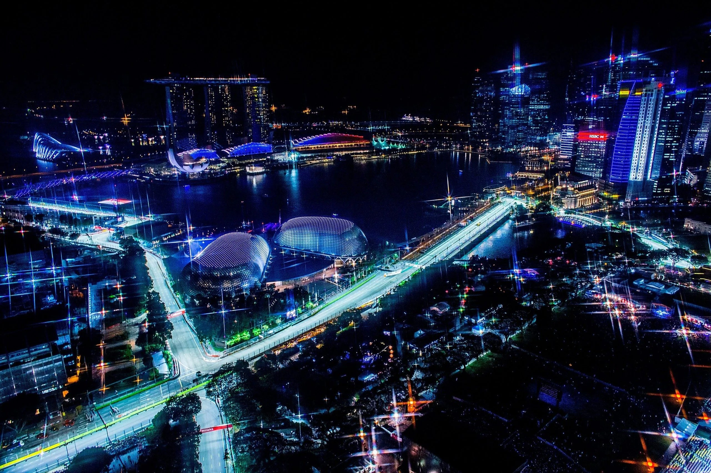
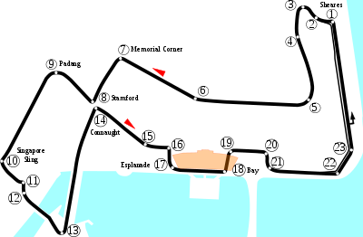

NAVEGUE
Home
Pilotos
Calendário/Tabela
Grand Prix
Construtoras
Últimas Notícias
GP de Singapura
SOBRE
A pista de Singapura, também conhecida como Circuito de Marina Bay, é um circuito de corrida localizado na cidade de Singapura. Foi inaugurada em 2008 e tem 5,063 km de extensão, com 23 curvas. A pista é conhecida por ser a primeira corrida noturna da Fórmula 1 e por ser uma das mais desafiadoras do calendário da categoria, com curvas apertadas e poucas oportunidades de ultrapassagem. Além disso, a pista é cercada por arranha-céus e pela bela vista da baía de Singapura, o que a torna uma das mais impressionantes do calendário. A primeira corrida da Fórmula 1 na pista de Singapura aconteceu em 2008 e desde então tem sido um dos destaques do calendário da categoria.
Circuitos Utilizados
Marina Bay

INFORMAÇÕES DA CORRIDA

Localização
Singapura
Voltas
61
Percurso
5.065 km
Total
308.828 km
Curvas
23
Pole
Lewis Hamilton
Anos Disputados
21
Última Disputa
2022
Maior vencedor
Sebastian Vettel
Última Corrida - Pódio
Sergio Perez